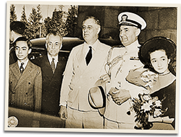

|
j
a v a s c r i p t |
May 10, 1942

Quezon Family with Roosevelt
After reporting Quezon's death, the Tribune finally admitted that he's in San Francisco: Still unaware of the U.S. scheme to utilize him as a puppet as well as a source of Anglo-American propaganda, Manuel L. Quezon, former President of the Philippine Commonwealth, arrived in San Francisco accompanied by members of his family and other officials. Observers here commented that it was a pity that Quezon has put up a futile pretense of resisting Japs when the Filipinos in the Philippines are now cooperating with the Japanese in the reconstruction of the country. Another resuscitation is the USS Marblehead, which limped back to the U.S. some days ago. Much ado was made of its sinking some time ago. "Allied Fleet Lost 89 Planes ... Another Destroyer sunk as Coral Sea Battle Rages" — which softens the blow of admitting that the Japanese lost one "small" carrier. MacArthur's communiqué said it was tough hunting to find enemy naval "remnants." We saw our first pictures of bombed out Corregidor, which one article described as "Luxurious Beyond Words." The correspondent concluded that Corregidor had plenty of food left because the Japanese soldiers were given a meal of corn beef. |
|
|
|
|